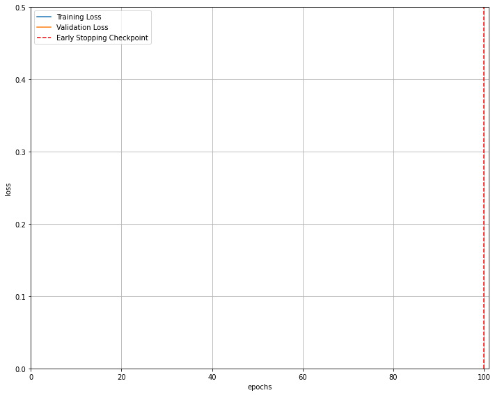

GNN tutorial 2
Node calssification with GNN (Cora dataset)
This tutorial will teach you how to apply Graph Neural Networks (GNNs) to the task of node classification. Here, we are given the ground-truth labels of only a small subset of nodes, and want to infer the labels for all the remaining nodes (transductive learning).
Data
To demonstrate, we make use of the Cora dataset, which is a citation network where nodes represent documents. Each node is described by a 1433-dimensional bag-of-words feature vector. Two documents are connected if there exists a citation link between them. The task is to infer the category of each document (7 in total).
This dataset was first introduced by Yang et al. (2016)1 as one of the datasets of the Planetoid benchmark suite. We again can make use PyTorch Geometric for an easy access to this dataset via torch_geometric.datasets.Planetoid2:
from torch_geometric.datasets import Planetoid
from torch_geometric.transforms import NormalizeFeatures
dataset = Planetoid(root='data/Planetoid', name='Cora', transform=NormalizeFeatures())
print()
print(f'Dataset: {dataset}:')
print('======================')
print(f'Number of graphs: {len(dataset)}')
print(f'Number of features: {dataset.num_features}')
print(f'Number of classes: {dataset.num_classes}')
Dataset: Cora():
======================
Number of graphs: 1
Number of features: 1433
Number of classes: 7data = dataset[0] # Get the first graph object.
print()
print(data)
print('===========================================================================================================')
Data(x=[2708, 1433], edge_index=[2, 10556], y=[2708], train_mask=[2708], val_mask=[2708], test_mask=[2708])
===========================================================================================================# Gather some statistics about the graph.
print(f'Number of nodes: {data.num_nodes}')
print(f'Number of edges: {data.num_edges}')
print(f'Average node degree: {data.num_edges / data.num_nodes:.2f}')
print(f'Number of training nodes: {data.train_mask.sum()}')
print(f'Training node label rate: {int(data.train_mask.sum()) / data.num_nodes:.2f}')
print(f'Has isolated nodes: {data.has_isolated_nodes()}')
print(f'Has self-loops: {data.has_self_loops()}')
print(f'Is undirected: {data.is_undirected()}')Number of nodes: 2708
Number of edges: 10556
Average node degree: 3.90
Number of training nodes: 140
Training node label rate: 0.05
Has isolated nodes: False
Has self-loops: False
Is undirected: True- 각 클래스 당 20개씩 정답을 알고 있음.
- training node label rate = \(5\%\) (학습을 위한 노드는 전체의 5% 밖에 안된다..)
this network is undirected, and that there exists no isolated nodes (each document has at least one citation).
(시도1 ) Training a Multi-layer Perception Network(MLP)
n theory, we should be able to infer the category of a document solely based on its content, i.e. its bag-of-words feature representation, without taking any relational information into account.
Let’s verify that by constructing a simple MLP that solely operates on input node features (using shared weights across all nodes):
class MLP(torch.nn.Module):
def __init__(self, hidden_channels):
super().__init__()
## 우리가 사용할 레이어 정의
torch.manual_seed(12345)
self.lin1 = Linear(dataset.num_features, hidden_channels)
self.lin2 = Linear(hidden_channels, dataset.num_classes)
## 레이어 정의 끝!
def forward(self, x):
## yhat을 어떻게 구할것인지 정의
x = self.lin1(x)
x = x.relu()
x = F.dropout(x, p=0.5, training=self.training)
x = self.lin2(x)
## 정의 끝!
return x
model = MLP(hidden_channels=16)
print(model)MLP(
(lin1): Linear(in_features=1433, out_features=16, bias=True)
(lin2): Linear(in_features=16, out_features=7, bias=True)
)def train():
model.train()
optimizr.zero_grad() # Clear gradients. <-- 앞에 나와도 상관없는건가??
out = model(data.x) # Perform a single forward pass.
loss = loss_fn(out[data.train_mask], data.y[data.train_mask]) # Compute the loss solely based on the training nodes.
loss.backward() # Derive gradients.
optimizr.step() # Update parameters based on gradients.
return loss
def test():
model.eval()
out = model(data.x)
pred = out.argmax(dim=1) # Use the class with highest probability.
test_correct = pred[data.test_mask] == data.y[data.test_mask] # Check against ground-truth labels.
test_acc = int(test_correct.sum()) / int(data.test_mask.sum()) # Derive ratio of correct predictions.
return test_acc
for epoch in range(1, 201):
loss = train()
print(f'Epoch: {epoch:03d}, Loss: {loss:.4f}')Epoch: 001, Loss: 1.9615
Epoch: 002, Loss: 1.9557
Epoch: 003, Loss: 1.9505
Epoch: 004, Loss: 1.9423
Epoch: 005, Loss: 1.9327
Epoch: 006, Loss: 1.9279
Epoch: 007, Loss: 1.9144
Epoch: 008, Loss: 1.9087
Epoch: 009, Loss: 1.9023
Epoch: 010, Loss: 1.8893
Epoch: 011, Loss: 1.8776
Epoch: 012, Loss: 1.8594
Epoch: 013, Loss: 1.8457
Epoch: 014, Loss: 1.8365
Epoch: 015, Loss: 1.8280
Epoch: 016, Loss: 1.7965
Epoch: 017, Loss: 1.7984
Epoch: 018, Loss: 1.7832
Epoch: 019, Loss: 1.7495
Epoch: 020, Loss: 1.7441
Epoch: 021, Loss: 1.7188
Epoch: 022, Loss: 1.7124
Epoch: 023, Loss: 1.6785
Epoch: 024, Loss: 1.6660
Epoch: 025, Loss: 1.6119
Epoch: 026, Loss: 1.6236
Epoch: 027, Loss: 1.5827
Epoch: 028, Loss: 1.5784
Epoch: 029, Loss: 1.5524
Epoch: 030, Loss: 1.5020
Epoch: 031, Loss: 1.5065
Epoch: 032, Loss: 1.4742
Epoch: 033, Loss: 1.4581
Epoch: 034, Loss: 1.4246
Epoch: 035, Loss: 1.4131
Epoch: 036, Loss: 1.4112
Epoch: 037, Loss: 1.3923
Epoch: 038, Loss: 1.3055
Epoch: 039, Loss: 1.2982
Epoch: 040, Loss: 1.2543
Epoch: 041, Loss: 1.2244
Epoch: 042, Loss: 1.2331
Epoch: 043, Loss: 1.1984
Epoch: 044, Loss: 1.1796
Epoch: 045, Loss: 1.1093
Epoch: 046, Loss: 1.1284
Epoch: 047, Loss: 1.1229
Epoch: 048, Loss: 1.0383
Epoch: 049, Loss: 1.0439
Epoch: 050, Loss: 1.0563
Epoch: 051, Loss: 0.9893
Epoch: 052, Loss: 1.0508
Epoch: 053, Loss: 0.9343
Epoch: 054, Loss: 0.9639
Epoch: 055, Loss: 0.8929
Epoch: 056, Loss: 0.8705
Epoch: 057, Loss: 0.9176
Epoch: 058, Loss: 0.9239
Epoch: 059, Loss: 0.8641
Epoch: 060, Loss: 0.8578
Epoch: 061, Loss: 0.7908
Epoch: 062, Loss: 0.7856
Epoch: 063, Loss: 0.7683
Epoch: 064, Loss: 0.7816
Epoch: 065, Loss: 0.7356
Epoch: 066, Loss: 0.6951
Epoch: 067, Loss: 0.7300
Epoch: 068, Loss: 0.6939
Epoch: 069, Loss: 0.7550
Epoch: 070, Loss: 0.6864
Epoch: 071, Loss: 0.7094
Epoch: 072, Loss: 0.7238
Epoch: 073, Loss: 0.7150
Epoch: 074, Loss: 0.6191
Epoch: 075, Loss: 0.6770
Epoch: 076, Loss: 0.6487
Epoch: 077, Loss: 0.6258
Epoch: 078, Loss: 0.5821
Epoch: 079, Loss: 0.5637
Epoch: 080, Loss: 0.6368
Epoch: 081, Loss: 0.6333
Epoch: 082, Loss: 0.6434
Epoch: 083, Loss: 0.5974
Epoch: 084, Loss: 0.6176
Epoch: 085, Loss: 0.5972
Epoch: 086, Loss: 0.4690
Epoch: 087, Loss: 0.6362
Epoch: 088, Loss: 0.6118
Epoch: 089, Loss: 0.5248
Epoch: 090, Loss: 0.5520
Epoch: 091, Loss: 0.6130
Epoch: 092, Loss: 0.5361
Epoch: 093, Loss: 0.5594
Epoch: 094, Loss: 0.5049
Epoch: 095, Loss: 0.5043
Epoch: 096, Loss: 0.5235
Epoch: 097, Loss: 0.5451
Epoch: 098, Loss: 0.5329
Epoch: 099, Loss: 0.5008
Epoch: 100, Loss: 0.5350
Epoch: 101, Loss: 0.5343
Epoch: 102, Loss: 0.5138
Epoch: 103, Loss: 0.5377
Epoch: 104, Loss: 0.5353
Epoch: 105, Loss: 0.5176
Epoch: 106, Loss: 0.5229
Epoch: 107, Loss: 0.4558
Epoch: 108, Loss: 0.4883
Epoch: 109, Loss: 0.4659
Epoch: 110, Loss: 0.4908
Epoch: 111, Loss: 0.4966
Epoch: 112, Loss: 0.4725
Epoch: 113, Loss: 0.4787
Epoch: 114, Loss: 0.4390
Epoch: 115, Loss: 0.4199
Epoch: 116, Loss: 0.4810
Epoch: 117, Loss: 0.4484
Epoch: 118, Loss: 0.5080
Epoch: 119, Loss: 0.4241
Epoch: 120, Loss: 0.4745
Epoch: 121, Loss: 0.4651
Epoch: 122, Loss: 0.4652
Epoch: 123, Loss: 0.5580
Epoch: 124, Loss: 0.4861
Epoch: 125, Loss: 0.4405
Epoch: 126, Loss: 0.4292
Epoch: 127, Loss: 0.4409
Epoch: 128, Loss: 0.3575
Epoch: 129, Loss: 0.4468
Epoch: 130, Loss: 0.4603
Epoch: 131, Loss: 0.4108
Epoch: 132, Loss: 0.4601
Epoch: 133, Loss: 0.4258
Epoch: 134, Loss: 0.3852
Epoch: 135, Loss: 0.4028
Epoch: 136, Loss: 0.4245
Epoch: 137, Loss: 0.4300
Epoch: 138, Loss: 0.4693
Epoch: 139, Loss: 0.4314
Epoch: 140, Loss: 0.4031
Epoch: 141, Loss: 0.4290
Epoch: 142, Loss: 0.4110
Epoch: 143, Loss: 0.3863
Epoch: 144, Loss: 0.4215
Epoch: 145, Loss: 0.4519
Epoch: 146, Loss: 0.3940
Epoch: 147, Loss: 0.4429
Epoch: 148, Loss: 0.3527
Epoch: 149, Loss: 0.4390
Epoch: 150, Loss: 0.4212
Epoch: 151, Loss: 0.4128
Epoch: 152, Loss: 0.3779
Epoch: 153, Loss: 0.4801
Epoch: 154, Loss: 0.4130
Epoch: 155, Loss: 0.3962
Epoch: 156, Loss: 0.4262
Epoch: 157, Loss: 0.4210
Epoch: 158, Loss: 0.4081
Epoch: 159, Loss: 0.4066
Epoch: 160, Loss: 0.3782
Epoch: 161, Loss: 0.3836
Epoch: 162, Loss: 0.4172
Epoch: 163, Loss: 0.3993
Epoch: 164, Loss: 0.4477
Epoch: 165, Loss: 0.3714
Epoch: 166, Loss: 0.3610
Epoch: 167, Loss: 0.4546
Epoch: 168, Loss: 0.4387
Epoch: 169, Loss: 0.3793
Epoch: 170, Loss: 0.3704
Epoch: 171, Loss: 0.4286
Epoch: 172, Loss: 0.4131
Epoch: 173, Loss: 0.3795
Epoch: 174, Loss: 0.4230
Epoch: 175, Loss: 0.4139
Epoch: 176, Loss: 0.3586
Epoch: 177, Loss: 0.3588
Epoch: 178, Loss: 0.3911
Epoch: 179, Loss: 0.3810
Epoch: 180, Loss: 0.4203
Epoch: 181, Loss: 0.3583
Epoch: 182, Loss: 0.3690
Epoch: 183, Loss: 0.4025
Epoch: 184, Loss: 0.3920
Epoch: 185, Loss: 0.4369
Epoch: 186, Loss: 0.4317
Epoch: 187, Loss: 0.4911
Epoch: 188, Loss: 0.3369
Epoch: 189, Loss: 0.4945
Epoch: 190, Loss: 0.3912
Epoch: 191, Loss: 0.3824
Epoch: 192, Loss: 0.3479
Epoch: 193, Loss: 0.3798
Epoch: 194, Loss: 0.3799
Epoch: 195, Loss: 0.4015
Epoch: 196, Loss: 0.3615
Epoch: 197, Loss: 0.3985
Epoch: 198, Loss: 0.4664
Epoch: 199, Loss: 0.3714
Epoch: 200, Loss: 0.3810Test Accuracy: 0.5900- MLP \(\to\) \(59\%\) test accuracy (그냥 찍는 것보다는 낫지만 성능이 별로임)
- 문제1 - 심각한 오버피팅때문에 성능이 안좋게 나오는 것. - 그렇다면 왜 오버피팅이 될까? \(\to\) 학습에 사용되는 training 노드수가 너무 작아 모르는 노드에 대해 일반화 하기 어렵다.
- 문제2 - MLP 모델은 중요한 bias가 반영이 안된다. (인용된 논문은 문서의 카테고리와 관련이 있을 가능성이 매우매우 높지만 이런것들이 반영이 안된다는 점)
Graph Neural Network를 사용해서 모델 성능을 높일수 있을 것 같다.
(시도2) Training a Graph Neural Network (GNN)
We can easily convert our MLP to a GNN by swapping the torch.nn.Linear layers with PyG’s GNN operators.
Following-up on the first part of this tutorial, we replace the linear layers by the GCNConv module. To recap, the GCN layer (Kipf et al. (2017)) is defined as
\[ \mathbf{x}_v^{(\ell + 1)} = \mathbf{W}^{(\ell + 1)} \sum_{w \in \mathcal{N}(v) \, \cup \, \{ v \}} \frac{1}{c_{w,v}} \cdot \mathbf{x}_w^{(\ell)} \]
- \(\bf{W}^{l+1}\) : a trainable weight matrix of shape of shape [num_output_features, num_input_features]
- \(c_{w,v}\): fixed normalization coefficient for each node.
in contrast, a single Linear layer is defined as
\[\bf{x}_v^{l+1} = \bf{W}^{l+1}\bf{x}_v^{l}\]
which does not make use of neighboring node information.
from torch_geometric.nn import GCNConv
class GCN(torch.nn.Module):
def __init__(self, hidden_channels):
super().__init__()
## 우리가 사용할 레이어 정의
torch.manual_seed(1234567)
self.conv1 = GCNConv(dataset.num_features, hidden_channels)
self.conv2 = GCNConv(hidden_channels, dataset.num_classes)
## 레이어 정의 끝!
def forward(self, x, edge_index):
## yhat을 어떻게 구할것인지 정의
x = self.conv1(x, edge_index)
x = x.relu()
x = F.dropout(x, p=0.5, training=self.training)
x = self.conv2(x, edge_index)
## 정의 끝!
return x
model = GCN(hidden_channels=16)
print(model)GCN(
(conv1): GCNConv(1433, 16)
(conv2): GCNConv(16, 7)
)- 학습전 GCN network의 노드임베딩 시각화
we make use of TSNE to embed our 7-dimensional node embeddings onto a 2D plane.
model = GCN(hidden_channels=16)
model.eval()
out = model(data.x, data.edge_index)
visualize(out, color=data.y)
We certainly can do better by training our model. The training and testing procedure is once again the same, but this time we make use of the node features x and the graph connectivity edge_index as input to our GCN model.
model = GCN(hidden_channels=16)
optimizr = torch.optim.Adam(model.parameters(), lr=0.01, weight_decay=5e-4)
loss_fn = torch.nn.CrossEntropyLoss()
def train():
model.train()
optimizr.zero_grad() # Clear gradients.
out = model(data.x, data.edge_index) # Perform a single forward pass.
loss = loss_fn(out[data.train_mask], data.y[data.train_mask]) # Compute the loss solely based on the training nodes.
loss.backward() # Derive gradients.
optimizr.step() # Update parameters based on gradients.
return loss
def test():
model.eval()
out = model(data.x, data.edge_index)
pred = out.argmax(dim=1) # Use the class with highest probability.
test_correct = pred[data.test_mask] == data.y[data.test_mask] # Check against ground-truth labels.
test_acc = int(test_correct.sum()) / int(data.test_mask.sum()) # Derive ratio of correct predictions.
return test_accfor epoch in range(1, 101):
loss = train()
print(f'Epoch: {epoch:03d}, Loss: {loss:.4f}, Test: {test_acc:.4f}')Epoch: 001, Loss: 1.9463, Test: 0.8020
Epoch: 002, Loss: 1.9409, Test: 0.8020
Epoch: 003, Loss: 1.9343, Test: 0.8020
Epoch: 004, Loss: 1.9275, Test: 0.8020
Epoch: 005, Loss: 1.9181, Test: 0.8020
Epoch: 006, Loss: 1.9086, Test: 0.8020
Epoch: 007, Loss: 1.9015, Test: 0.8020
Epoch: 008, Loss: 1.8933, Test: 0.8020
Epoch: 009, Loss: 1.8808, Test: 0.8020
Epoch: 010, Loss: 1.8685, Test: 0.8020
Epoch: 011, Loss: 1.8598, Test: 0.8020
Epoch: 012, Loss: 1.8482, Test: 0.8020
Epoch: 013, Loss: 1.8290, Test: 0.8020
Epoch: 014, Loss: 1.8233, Test: 0.8020
Epoch: 015, Loss: 1.8057, Test: 0.8020
Epoch: 016, Loss: 1.7966, Test: 0.8020
Epoch: 017, Loss: 1.7825, Test: 0.8020
Epoch: 018, Loss: 1.7617, Test: 0.8020
Epoch: 019, Loss: 1.7491, Test: 0.8020
Epoch: 020, Loss: 1.7310, Test: 0.8020
Epoch: 021, Loss: 1.7147, Test: 0.8020
Epoch: 022, Loss: 1.7056, Test: 0.8020
Epoch: 023, Loss: 1.6954, Test: 0.8020
Epoch: 024, Loss: 1.6697, Test: 0.8020
Epoch: 025, Loss: 1.6538, Test: 0.8020
Epoch: 026, Loss: 1.6312, Test: 0.8020
Epoch: 027, Loss: 1.6161, Test: 0.8020
Epoch: 028, Loss: 1.5899, Test: 0.8020
Epoch: 029, Loss: 1.5711, Test: 0.8020
Epoch: 030, Loss: 1.5576, Test: 0.8020
Epoch: 031, Loss: 1.5393, Test: 0.8020
Epoch: 032, Loss: 1.5137, Test: 0.8020
Epoch: 033, Loss: 1.4948, Test: 0.8020
Epoch: 034, Loss: 1.4913, Test: 0.8020
Epoch: 035, Loss: 1.4698, Test: 0.8020
Epoch: 036, Loss: 1.3998, Test: 0.8020
Epoch: 037, Loss: 1.4041, Test: 0.8020
Epoch: 038, Loss: 1.3761, Test: 0.8020
Epoch: 039, Loss: 1.3631, Test: 0.8020
Epoch: 040, Loss: 1.3258, Test: 0.8020
Epoch: 041, Loss: 1.3030, Test: 0.8020
Epoch: 042, Loss: 1.3119, Test: 0.8020
Epoch: 043, Loss: 1.2519, Test: 0.8020
Epoch: 044, Loss: 1.2530, Test: 0.8020
Epoch: 045, Loss: 1.2492, Test: 0.8020
Epoch: 046, Loss: 1.2205, Test: 0.8020
Epoch: 047, Loss: 1.2037, Test: 0.8020
Epoch: 048, Loss: 1.1571, Test: 0.8020
Epoch: 049, Loss: 1.1700, Test: 0.8020
Epoch: 050, Loss: 1.1296, Test: 0.8020
Epoch: 051, Loss: 1.0860, Test: 0.8020
Epoch: 052, Loss: 1.1080, Test: 0.8020
Epoch: 053, Loss: 1.0564, Test: 0.8020
Epoch: 054, Loss: 1.0157, Test: 0.8020
Epoch: 055, Loss: 1.0362, Test: 0.8020
Epoch: 056, Loss: 1.0328, Test: 0.8020
Epoch: 057, Loss: 1.0058, Test: 0.8020
Epoch: 058, Loss: 0.9865, Test: 0.8020
Epoch: 059, Loss: 0.9667, Test: 0.8020
Epoch: 060, Loss: 0.9741, Test: 0.8020
Epoch: 061, Loss: 0.9769, Test: 0.8020
Epoch: 062, Loss: 0.9122, Test: 0.8020
Epoch: 063, Loss: 0.8993, Test: 0.8020
Epoch: 064, Loss: 0.8769, Test: 0.8020
Epoch: 065, Loss: 0.8575, Test: 0.8020
Epoch: 066, Loss: 0.8897, Test: 0.8020
Epoch: 067, Loss: 0.8312, Test: 0.8020
Epoch: 068, Loss: 0.8262, Test: 0.8020
Epoch: 069, Loss: 0.8511, Test: 0.8020
Epoch: 070, Loss: 0.7711, Test: 0.8020
Epoch: 071, Loss: 0.8012, Test: 0.8020
Epoch: 072, Loss: 0.7529, Test: 0.8020
Epoch: 073, Loss: 0.7525, Test: 0.8020
Epoch: 074, Loss: 0.7689, Test: 0.8020
Epoch: 075, Loss: 0.7553, Test: 0.8020
Epoch: 076, Loss: 0.7032, Test: 0.8020
Epoch: 077, Loss: 0.7326, Test: 0.8020
Epoch: 078, Loss: 0.7122, Test: 0.8020
Epoch: 079, Loss: 0.7090, Test: 0.8020
Epoch: 080, Loss: 0.6755, Test: 0.8020
Epoch: 081, Loss: 0.6666, Test: 0.8020
Epoch: 082, Loss: 0.6679, Test: 0.8020
Epoch: 083, Loss: 0.7037, Test: 0.8020
Epoch: 084, Loss: 0.6752, Test: 0.8020
Epoch: 085, Loss: 0.6266, Test: 0.8020
Epoch: 086, Loss: 0.6564, Test: 0.8020
Epoch: 087, Loss: 0.6266, Test: 0.8020
Epoch: 088, Loss: 0.6411, Test: 0.8020
Epoch: 089, Loss: 0.6226, Test: 0.8020
Epoch: 090, Loss: 0.6535, Test: 0.8020
Epoch: 091, Loss: 0.6317, Test: 0.8020
Epoch: 092, Loss: 0.5741, Test: 0.8020
Epoch: 093, Loss: 0.5572, Test: 0.8020
Epoch: 094, Loss: 0.5710, Test: 0.8020
Epoch: 095, Loss: 0.5816, Test: 0.8020
Epoch: 096, Loss: 0.5745, Test: 0.8020
Epoch: 097, Loss: 0.5547, Test: 0.8020
Epoch: 098, Loss: 0.5989, Test: 0.8020
Epoch: 099, Loss: 0.6021, Test: 0.8020
Epoch: 100, Loss: 0.5799, Test: 0.8020- GNN \(\to 81.5\%\) test accuracy!!!
There it is! By simply swapping the linear layers with GNN layers, we can reach 81.5% of test accuracy!
- 학습후 GCN network의 노드임베딩 시각화
- 카테고리별로 군집이 어느정도 잘 나눠진 느낌
(시도3) Validation set 이용 - 뭔가 잘못됨
from torch_geometric.nn import GCNConv
class GCN(torch.nn.Module):
def __init__(self, hidden_channels):
super().__init__()
## 우리가 사용할 레이어 정의
torch.manual_seed(1234567)
self.conv1 = GCNConv(dataset.num_features, hidden_channels)
self.conv2 = GCNConv(hidden_channels, dataset.num_classes)
## 레이어 정의 끝!
def forward(self, x, edge_index):
## yhat을 어떻게 구할것인지 정의
x = self.conv1(x, edge_index)
x = x.relu()
x = F.dropout(x, p=0.5, training=self.training)
x = self.conv2(x, edge_index)
## 정의 끝!
return x
model = GCN(hidden_channels=16)
print(model)# model = GCN(hidden_channels=16)
optimizr = torch.optim.Adam(model.parameters(), lr=0.01, weight_decay=5e-4)
loss_fn = torch.nn.CrossEntropyLoss()
def train():
model.train()
optimizr.zero_grad() # Clear gradients.
out = model(data.x, data.edge_index) # Perform a single forward pass.
loss = loss_fn(out[data.train_mask], data.y[data.train_mask]) # Compute the loss solely based on the training nodes.
loss.backward() # Derive gradients.
optimizr.step() # Update parameters based on gradients.
return loss
def test():
model.eval()
out = model(data.x, data.edge_index)
pred = out.argmax(dim=1) # Use the class with highest probability.
test_correct = pred[data.test_mask] == data.y[data.test_mask] # Check against ground-truth labels.
test_acc = int(test_correct.sum()) / int(data.test_mask.sum()) # Derive ratio of correct predictions.
return test_acc
def val():
model.eval()
out = model(data.x, data.edge_index)
pred = out.argmax(dim=1) # Use the class with highest probability.
val_correct = pred[data.val_mask] == data.y[data.val_mask] # Check against ground-truth labels.
val_acc = int(val_correct.sum()) / int(data.val_mask.sum()) # Derive ratio of correct predictions.
return val_accdropout=0.3
from torch_geometric.nn import GCNConv
class GCN(torch.nn.Module):
def __init__(self, hidden_channels):
super().__init__()
## 우리가 사용할 레이어 정의
torch.manual_seed(1234567)
self.conv1 = GCNConv(dataset.num_features, hidden_channels)
self.conv2 = GCNConv(hidden_channels, dataset.num_classes)
## 레이어 정의 끝!
def forward(self, x, edge_index):
## yhat을 어떻게 구할것인지 정의
x = self.conv1(x, edge_index)
x = x.relu()
x = F.dropout(x, p=0.3, training=self.training)
x = self.conv2(x, edge_index)
## 정의 끝!
return x
model = GCN(hidden_channels=16)
print(model)GCN(
(conv1): GCNConv(1433, 16)
(conv2): GCNConv(16, 7)
)model = GCN(hidden_channels=16)
optimizr = torch.optim.Adam(model.parameters(), lr=0.01, weight_decay=5e-4)
loss_fn = torch.nn.CrossEntropyLoss()
for epoch in range(1, 101):
loss = train()
val_acc = val()
test_acc = test()
print(f'에폭: {epoch:03d}, Loss: {loss:.4f}, Val: {val_acc:.4f}, Test: {test_acc:.4f}')에폭: 001, Loss: 1.9464, Val: 0.2780, Test: 0.2740
에폭: 002, Loss: 1.9407, Val: 0.4700, Test: 0.4760
에폭: 003, Loss: 1.9337, Val: 0.2860, Test: 0.3320
에폭: 004, Loss: 1.9258, Val: 0.2960, Test: 0.3550
에폭: 005, Loss: 1.9156, Val: 0.3040, Test: 0.3420
에폭: 006, Loss: 1.9056, Val: 0.3220, Test: 0.3490
에폭: 007, Loss: 1.8976, Val: 0.3720, Test: 0.3790
에폭: 008, Loss: 1.8855, Val: 0.3900, Test: 0.3810
에폭: 009, Loss: 1.8749, Val: 0.4040, Test: 0.4030
에폭: 010, Loss: 1.8610, Val: 0.4240, Test: 0.4150
에폭: 011, Loss: 1.8510, Val: 0.4460, Test: 0.4290
에폭: 012, Loss: 1.8393, Val: 0.4700, Test: 0.4650
에폭: 013, Loss: 1.8186, Val: 0.4920, Test: 0.4850
에폭: 014, Loss: 1.8061, Val: 0.5000, Test: 0.5010
에폭: 015, Loss: 1.7972, Val: 0.5120, Test: 0.5220
에폭: 016, Loss: 1.7835, Val: 0.5160, Test: 0.5360
에폭: 017, Loss: 1.7636, Val: 0.5440, Test: 0.5580
에폭: 018, Loss: 1.7460, Val: 0.5580, Test: 0.5740
에폭: 019, Loss: 1.7369, Val: 0.5640, Test: 0.5900
에폭: 020, Loss: 1.7162, Val: 0.5800, Test: 0.6060
에폭: 021, Loss: 1.6970, Val: 0.5940, Test: 0.6260
에폭: 022, Loss: 1.6831, Val: 0.6080, Test: 0.6390
에폭: 023, Loss: 1.6674, Val: 0.6420, Test: 0.6470
에폭: 024, Loss: 1.6391, Val: 0.6480, Test: 0.6610
에폭: 025, Loss: 1.6216, Val: 0.6600, Test: 0.6730
에폭: 026, Loss: 1.6116, Val: 0.6680, Test: 0.6860
에폭: 027, Loss: 1.5808, Val: 0.6800, Test: 0.6940
에폭: 028, Loss: 1.5628, Val: 0.6880, Test: 0.7000
에폭: 029, Loss: 1.5349, Val: 0.7000, Test: 0.7040
에폭: 030, Loss: 1.5208, Val: 0.7100, Test: 0.7100
에폭: 031, Loss: 1.4980, Val: 0.7300, Test: 0.7130
에폭: 032, Loss: 1.4797, Val: 0.7360, Test: 0.7190
에폭: 033, Loss: 1.4533, Val: 0.7400, Test: 0.7330
에폭: 034, Loss: 1.4457, Val: 0.7420, Test: 0.7400
에폭: 035, Loss: 1.3973, Val: 0.7380, Test: 0.7480
에폭: 036, Loss: 1.3577, Val: 0.7380, Test: 0.7570
에폭: 037, Loss: 1.3596, Val: 0.7480, Test: 0.7600
에폭: 038, Loss: 1.3399, Val: 0.7500, Test: 0.7630
에폭: 039, Loss: 1.3004, Val: 0.7480, Test: 0.7640
에폭: 040, Loss: 1.2785, Val: 0.7600, Test: 0.7660
에폭: 041, Loss: 1.2550, Val: 0.7640, Test: 0.7710
에폭: 042, Loss: 1.2501, Val: 0.7640, Test: 0.7750
에폭: 043, Loss: 1.1990, Val: 0.7680, Test: 0.7800
에폭: 044, Loss: 1.1957, Val: 0.7640, Test: 0.7810
에폭: 045, Loss: 1.1835, Val: 0.7620, Test: 0.7840
에폭: 046, Loss: 1.1654, Val: 0.7620, Test: 0.7860
에폭: 047, Loss: 1.1340, Val: 0.7680, Test: 0.7850
에폭: 048, Loss: 1.0928, Val: 0.7640, Test: 0.7870
에폭: 049, Loss: 1.0673, Val: 0.7620, Test: 0.7890
에폭: 050, Loss: 1.0424, Val: 0.7600, Test: 0.7950
에폭: 051, Loss: 1.0307, Val: 0.7700, Test: 0.7960
에폭: 052, Loss: 1.0354, Val: 0.7700, Test: 0.7960
에폭: 053, Loss: 0.9902, Val: 0.7680, Test: 0.7960
에폭: 054, Loss: 0.9670, Val: 0.7660, Test: 0.7990
에폭: 055, Loss: 0.9509, Val: 0.7720, Test: 0.8010
에폭: 056, Loss: 0.9346, Val: 0.7720, Test: 0.7990
에폭: 057, Loss: 0.9241, Val: 0.7720, Test: 0.8010
에폭: 058, Loss: 0.9048, Val: 0.7700, Test: 0.8060
에폭: 059, Loss: 0.8751, Val: 0.7760, Test: 0.8070
에폭: 060, Loss: 0.8744, Val: 0.7760, Test: 0.8070
에폭: 061, Loss: 0.8741, Val: 0.7760, Test: 0.8060
에폭: 062, Loss: 0.8382, Val: 0.7760, Test: 0.8060
에폭: 063, Loss: 0.8386, Val: 0.7760, Test: 0.8050
에폭: 064, Loss: 0.8064, Val: 0.7740, Test: 0.8050
에폭: 065, Loss: 0.7937, Val: 0.7700, Test: 0.8050
에폭: 066, Loss: 0.7756, Val: 0.7700, Test: 0.8060
에폭: 067, Loss: 0.7719, Val: 0.7740, Test: 0.8060
에폭: 068, Loss: 0.7680, Val: 0.7760, Test: 0.8080
에폭: 069, Loss: 0.7578, Val: 0.7740, Test: 0.8060
에폭: 070, Loss: 0.6947, Val: 0.7760, Test: 0.8060
에폭: 071, Loss: 0.6947, Val: 0.7740, Test: 0.8060
에폭: 072, Loss: 0.7084, Val: 0.7800, Test: 0.8090
에폭: 073, Loss: 0.6902, Val: 0.7820, Test: 0.8110
에폭: 074, Loss: 0.6982, Val: 0.7840, Test: 0.8120
에폭: 075, Loss: 0.6644, Val: 0.7860, Test: 0.8130
에폭: 076, Loss: 0.6464, Val: 0.7840, Test: 0.8140
에폭: 077, Loss: 0.6493, Val: 0.7820, Test: 0.8110
에폭: 078, Loss: 0.6318, Val: 0.7820, Test: 0.8090
에폭: 079, Loss: 0.6261, Val: 0.7820, Test: 0.8100
에폭: 080, Loss: 0.6206, Val: 0.7840, Test: 0.8090
에폭: 081, Loss: 0.6000, Val: 0.7820, Test: 0.8080
에폭: 082, Loss: 0.5981, Val: 0.7820, Test: 0.8050
에폭: 083, Loss: 0.6003, Val: 0.7840, Test: 0.8070
에폭: 084, Loss: 0.5982, Val: 0.7780, Test: 0.8070
에폭: 085, Loss: 0.5790, Val: 0.7780, Test: 0.8090
에폭: 086, Loss: 0.5735, Val: 0.7760, Test: 0.8100
에폭: 087, Loss: 0.5556, Val: 0.7700, Test: 0.8110
에폭: 088, Loss: 0.5661, Val: 0.7720, Test: 0.8090
에폭: 089, Loss: 0.5532, Val: 0.7720, Test: 0.8090
에폭: 090, Loss: 0.5643, Val: 0.7720, Test: 0.8110
에폭: 091, Loss: 0.5254, Val: 0.7800, Test: 0.8120
에폭: 092, Loss: 0.5273, Val: 0.7800, Test: 0.8120
에폭: 093, Loss: 0.4899, Val: 0.7800, Test: 0.8120
에폭: 094, Loss: 0.5018, Val: 0.7840, Test: 0.8120
에폭: 095, Loss: 0.5108, Val: 0.7820, Test: 0.8100
에폭: 096, Loss: 0.4899, Val: 0.7800, Test: 0.8090
에폭: 097, Loss: 0.5016, Val: 0.7780, Test: 0.8080
에폭: 098, Loss: 0.5214, Val: 0.7800, Test: 0.8110
에폭: 099, Loss: 0.5047, Val: 0.7820, Test: 0.8130
에폭: 100, Loss: 0.5089, Val: 0.7820, Test: 0.8120dropout = 0.4
from torch_geometric.nn import GCNConv
class GCN(torch.nn.Module):
def __init__(self, hidden_channels):
super().__init__()
## 우리가 사용할 레이어 정의
torch.manual_seed(1234567)
self.conv1 = GCNConv(dataset.num_features, hidden_channels)
self.conv2 = GCNConv(hidden_channels, dataset.num_classes)
## 레이어 정의 끝!
def forward(self, x, edge_index):
## yhat을 어떻게 구할것인지 정의
x = self.conv1(x, edge_index)
x = x.relu()
x = F.dropout(x, p=0.8, training=self.training)
x = self.conv2(x, edge_index)
## 정의 끝!
return x
model = GCN(hidden_channels=16)
print(model)GCN(
(conv1): GCNConv(1433, 16)
(conv2): GCNConv(16, 7)
)model = GCN(hidden_channels=16)
optimizr = torch.optim.Adam(model.parameters(), lr=0.01, weight_decay=5e-4)
loss_fn = torch.nn.CrossEntropyLoss()
for epoch in range(1, 201):
loss = train()
val_acc = val()
test_acc = test()
print(f'에폭: {epoch:03d}, Loss: {loss:.4f}, Val: {val_acc:.4f}, Test: {test_acc:.4f}')에폭: 001, Loss: 1.9458, Val: 0.2020, Test: 0.1960
에폭: 002, Loss: 1.9416, Val: 0.2400, Test: 0.2860
에폭: 003, Loss: 1.9351, Val: 0.3300, Test: 0.3690
에폭: 004, Loss: 1.9282, Val: 0.4040, Test: 0.4650
에폭: 005, Loss: 1.9185, Val: 0.3680, Test: 0.4170
에폭: 006, Loss: 1.9111, Val: 0.3900, Test: 0.4140
에폭: 007, Loss: 1.8986, Val: 0.4080, Test: 0.4130
에폭: 008, Loss: 1.8979, Val: 0.4600, Test: 0.4520
에폭: 009, Loss: 1.8901, Val: 0.5200, Test: 0.5100
에폭: 010, Loss: 1.8813, Val: 0.5640, Test: 0.5850
에폭: 011, Loss: 1.8684, Val: 0.6020, Test: 0.6290
에폭: 012, Loss: 1.8647, Val: 0.6440, Test: 0.6660
에폭: 013, Loss: 1.8531, Val: 0.6880, Test: 0.6890
에폭: 014, Loss: 1.8475, Val: 0.7000, Test: 0.7020
에폭: 015, Loss: 1.8369, Val: 0.7060, Test: 0.7150
에폭: 016, Loss: 1.8176, Val: 0.7060, Test: 0.7240
에폭: 017, Loss: 1.8216, Val: 0.7060, Test: 0.7200
에폭: 018, Loss: 1.7893, Val: 0.7040, Test: 0.7210
에폭: 019, Loss: 1.7926, Val: 0.6860, Test: 0.7170
에폭: 020, Loss: 1.7799, Val: 0.6900, Test: 0.7260
에폭: 021, Loss: 1.7596, Val: 0.7000, Test: 0.7390
에폭: 022, Loss: 1.7663, Val: 0.7240, Test: 0.7400
에폭: 023, Loss: 1.7646, Val: 0.7340, Test: 0.7380
에폭: 024, Loss: 1.7265, Val: 0.7400, Test: 0.7450
에폭: 025, Loss: 1.7286, Val: 0.7440, Test: 0.7500
에폭: 026, Loss: 1.7099, Val: 0.7500, Test: 0.7600
에폭: 027, Loss: 1.7036, Val: 0.7620, Test: 0.7630
에폭: 028, Loss: 1.6803, Val: 0.7500, Test: 0.7580
에폭: 029, Loss: 1.6761, Val: 0.7400, Test: 0.7500
에폭: 030, Loss: 1.6506, Val: 0.7220, Test: 0.7440
에폭: 031, Loss: 1.6554, Val: 0.7240, Test: 0.7410
에폭: 032, Loss: 1.6095, Val: 0.7220, Test: 0.7410
에폭: 033, Loss: 1.6285, Val: 0.7220, Test: 0.7430
에폭: 034, Loss: 1.6106, Val: 0.7320, Test: 0.7400
에폭: 035, Loss: 1.6100, Val: 0.7380, Test: 0.7450
에폭: 036, Loss: 1.5603, Val: 0.7440, Test: 0.7510
에폭: 037, Loss: 1.5641, Val: 0.7540, Test: 0.7610
에폭: 038, Loss: 1.5882, Val: 0.7660, Test: 0.7630
에폭: 039, Loss: 1.5333, Val: 0.7660, Test: 0.7650
에폭: 040, Loss: 1.5253, Val: 0.7680, Test: 0.7730
에폭: 041, Loss: 1.4916, Val: 0.7640, Test: 0.7720
에폭: 042, Loss: 1.4735, Val: 0.7660, Test: 0.7760
에폭: 043, Loss: 1.4675, Val: 0.7640, Test: 0.7760
에폭: 044, Loss: 1.4731, Val: 0.7680, Test: 0.7800
에폭: 045, Loss: 1.4620, Val: 0.7760, Test: 0.7800
에폭: 046, Loss: 1.4686, Val: 0.7780, Test: 0.7830
에폭: 047, Loss: 1.4724, Val: 0.7760, Test: 0.7820
에폭: 048, Loss: 1.4250, Val: 0.7720, Test: 0.7820
에폭: 049, Loss: 1.3989, Val: 0.7700, Test: 0.7830
에폭: 050, Loss: 1.3982, Val: 0.7740, Test: 0.7830
에폭: 051, Loss: 1.3753, Val: 0.7660, Test: 0.7830
에폭: 052, Loss: 1.4042, Val: 0.7560, Test: 0.7800
에폭: 053, Loss: 1.3423, Val: 0.7500, Test: 0.7840
에폭: 054, Loss: 1.2905, Val: 0.7460, Test: 0.7830
에폭: 055, Loss: 1.2963, Val: 0.7500, Test: 0.7860
에폭: 056, Loss: 1.2941, Val: 0.7500, Test: 0.7850
에폭: 057, Loss: 1.2831, Val: 0.7440, Test: 0.7850
에폭: 058, Loss: 1.2691, Val: 0.7460, Test: 0.7840
에폭: 059, Loss: 1.2550, Val: 0.7480, Test: 0.7850
에폭: 060, Loss: 1.2946, Val: 0.7560, Test: 0.7860
에폭: 061, Loss: 1.2388, Val: 0.7600, Test: 0.7950
에폭: 062, Loss: 1.2063, Val: 0.7740, Test: 0.7980
에폭: 063, Loss: 1.1728, Val: 0.7800, Test: 0.8000
에폭: 064, Loss: 1.2194, Val: 0.7800, Test: 0.8000
에폭: 065, Loss: 1.1645, Val: 0.7780, Test: 0.7950
에폭: 066, Loss: 1.1883, Val: 0.7800, Test: 0.7940
에폭: 067, Loss: 1.1799, Val: 0.7820, Test: 0.8000
에폭: 068, Loss: 1.1352, Val: 0.7820, Test: 0.8040
에폭: 069, Loss: 1.1565, Val: 0.7800, Test: 0.8030
에폭: 070, Loss: 1.1607, Val: 0.7800, Test: 0.8100
에폭: 071, Loss: 1.1702, Val: 0.7820, Test: 0.8060
에폭: 072, Loss: 1.0625, Val: 0.7780, Test: 0.8070
에폭: 073, Loss: 1.0763, Val: 0.7760, Test: 0.8040
에폭: 074, Loss: 1.1284, Val: 0.7760, Test: 0.8050
에폭: 075, Loss: 1.1192, Val: 0.7760, Test: 0.8050
에폭: 076, Loss: 1.1223, Val: 0.7760, Test: 0.8020
에폭: 077, Loss: 1.0909, Val: 0.7780, Test: 0.8020
에폭: 078, Loss: 1.0818, Val: 0.7820, Test: 0.8000
에폭: 079, Loss: 1.0401, Val: 0.7860, Test: 0.8020
에폭: 080, Loss: 1.0602, Val: 0.7840, Test: 0.8060
에폭: 081, Loss: 0.9867, Val: 0.7780, Test: 0.8080
에폭: 082, Loss: 1.0140, Val: 0.7720, Test: 0.8100
에폭: 083, Loss: 1.0588, Val: 0.7760, Test: 0.8100
에폭: 084, Loss: 1.0348, Val: 0.7800, Test: 0.8080
에폭: 085, Loss: 0.9942, Val: 0.7760, Test: 0.8090
에폭: 086, Loss: 1.0048, Val: 0.7780, Test: 0.8100
에폭: 087, Loss: 1.0674, Val: 0.7760, Test: 0.8120
에폭: 088, Loss: 0.9671, Val: 0.7760, Test: 0.8110
에폭: 089, Loss: 0.9774, Val: 0.7720, Test: 0.8070
에폭: 090, Loss: 0.9716, Val: 0.7680, Test: 0.8060
에폭: 091, Loss: 0.9963, Val: 0.7700, Test: 0.8040
에폭: 092, Loss: 0.8949, Val: 0.7720, Test: 0.8010
에폭: 093, Loss: 0.8726, Val: 0.7760, Test: 0.8000
에폭: 094, Loss: 0.9658, Val: 0.7740, Test: 0.7990
에폭: 095, Loss: 0.9384, Val: 0.7720, Test: 0.8010
에폭: 096, Loss: 0.9093, Val: 0.7680, Test: 0.8010
에폭: 097, Loss: 0.9431, Val: 0.7700, Test: 0.8080
에폭: 098, Loss: 0.9662, Val: 0.7700, Test: 0.8080
에폭: 099, Loss: 0.9925, Val: 0.7760, Test: 0.8130
에폭: 100, Loss: 0.9153, Val: 0.7840, Test: 0.8140
에폭: 101, Loss: 0.9061, Val: 0.7900, Test: 0.8170
에폭: 102, Loss: 0.9155, Val: 0.7900, Test: 0.8160
에폭: 103, Loss: 0.8827, Val: 0.7900, Test: 0.8180
에폭: 104, Loss: 0.8179, Val: 0.7860, Test: 0.8130
에폭: 105, Loss: 0.8969, Val: 0.7820, Test: 0.8100
에폭: 106, Loss: 0.8547, Val: 0.7760, Test: 0.8050
에폭: 107, Loss: 0.8653, Val: 0.7760, Test: 0.8020
에폭: 108, Loss: 0.8104, Val: 0.7760, Test: 0.8040
에폭: 109, Loss: 0.8001, Val: 0.7740, Test: 0.8060
에폭: 110, Loss: 0.8422, Val: 0.7760, Test: 0.8060
에폭: 111, Loss: 0.9050, Val: 0.7780, Test: 0.8110
에폭: 112, Loss: 0.8356, Val: 0.7780, Test: 0.8130
에폭: 113, Loss: 0.8479, Val: 0.7800, Test: 0.8130
에폭: 114, Loss: 0.8365, Val: 0.7840, Test: 0.8170
에폭: 115, Loss: 0.9083, Val: 0.7840, Test: 0.8160
에폭: 116, Loss: 0.8513, Val: 0.7880, Test: 0.8170
에폭: 117, Loss: 0.8496, Val: 0.7920, Test: 0.8180
에폭: 118, Loss: 0.8252, Val: 0.7900, Test: 0.8160
에폭: 119, Loss: 0.7529, Val: 0.7840, Test: 0.8140
에폭: 120, Loss: 0.7785, Val: 0.7800, Test: 0.8060
에폭: 121, Loss: 0.7831, Val: 0.7780, Test: 0.8040
에폭: 122, Loss: 0.8178, Val: 0.7780, Test: 0.8060
에폭: 123, Loss: 0.8424, Val: 0.7800, Test: 0.8060
에폭: 124, Loss: 0.8058, Val: 0.7920, Test: 0.8120
에폭: 125, Loss: 0.8109, Val: 0.7860, Test: 0.8140
에폭: 126, Loss: 0.9267, Val: 0.7900, Test: 0.8180
에폭: 127, Loss: 0.8643, Val: 0.7900, Test: 0.8230
에폭: 128, Loss: 0.8750, Val: 0.7920, Test: 0.8190
에폭: 129, Loss: 0.7682, Val: 0.7940, Test: 0.8210
에폭: 130, Loss: 0.7139, Val: 0.7920, Test: 0.8210
에폭: 131, Loss: 0.7753, Val: 0.7880, Test: 0.8200
에폭: 132, Loss: 0.7781, Val: 0.7860, Test: 0.8190
에폭: 133, Loss: 0.7629, Val: 0.7800, Test: 0.8110
에폭: 134, Loss: 0.7910, Val: 0.7760, Test: 0.8100
에폭: 135, Loss: 0.7783, Val: 0.7740, Test: 0.8100
에폭: 136, Loss: 0.8048, Val: 0.7740, Test: 0.8080
에폭: 137, Loss: 0.7612, Val: 0.7780, Test: 0.8110
에폭: 138, Loss: 0.8078, Val: 0.7760, Test: 0.8110
에폭: 139, Loss: 0.7353, Val: 0.7780, Test: 0.8090
에폭: 140, Loss: 0.7109, Val: 0.7780, Test: 0.8100
에폭: 141, Loss: 0.7260, Val: 0.7760, Test: 0.8080
에폭: 142, Loss: 0.7270, Val: 0.7820, Test: 0.8120
에폭: 143, Loss: 0.7693, Val: 0.7820, Test: 0.8130
에폭: 144, Loss: 0.7005, Val: 0.7880, Test: 0.8150
에폭: 145, Loss: 0.7636, Val: 0.7920, Test: 0.8170
에폭: 146, Loss: 0.6755, Val: 0.7900, Test: 0.8190
에폭: 147, Loss: 0.7066, Val: 0.7880, Test: 0.8220
에폭: 148, Loss: 0.8002, Val: 0.7860, Test: 0.8150
에폭: 149, Loss: 0.7052, Val: 0.7820, Test: 0.8130
에폭: 150, Loss: 0.6868, Val: 0.7820, Test: 0.8120
에폭: 151, Loss: 0.8008, Val: 0.7860, Test: 0.8110
에폭: 152, Loss: 0.7013, Val: 0.7900, Test: 0.8170
에폭: 153, Loss: 0.7111, Val: 0.7840, Test: 0.8160
에폭: 154, Loss: 0.7770, Val: 0.7860, Test: 0.8140
에폭: 155, Loss: 0.6190, Val: 0.7840, Test: 0.8130
에폭: 156, Loss: 0.7086, Val: 0.7880, Test: 0.8140
에폭: 157, Loss: 0.7659, Val: 0.7860, Test: 0.8120
에폭: 158, Loss: 0.6668, Val: 0.7880, Test: 0.8140
에폭: 159, Loss: 0.7966, Val: 0.7840, Test: 0.8140
에폭: 160, Loss: 0.6869, Val: 0.7840, Test: 0.8130
에폭: 161, Loss: 0.6813, Val: 0.7840, Test: 0.8160
에폭: 162, Loss: 0.7920, Val: 0.7880, Test: 0.8170
에폭: 163, Loss: 0.6930, Val: 0.7880, Test: 0.8140
에폭: 164, Loss: 0.6697, Val: 0.7880, Test: 0.8160
에폭: 165, Loss: 0.6838, Val: 0.7860, Test: 0.8160
에폭: 166, Loss: 0.7552, Val: 0.7880, Test: 0.8200
에폭: 167, Loss: 0.6565, Val: 0.7840, Test: 0.8170
에폭: 168, Loss: 0.7334, Val: 0.7840, Test: 0.8170
에폭: 169, Loss: 0.6458, Val: 0.7800, Test: 0.8160
에폭: 170, Loss: 0.6736, Val: 0.7760, Test: 0.8100
에폭: 171, Loss: 0.6916, Val: 0.7820, Test: 0.8090
에폭: 172, Loss: 0.6412, Val: 0.7860, Test: 0.8130
에폭: 173, Loss: 0.6597, Val: 0.7860, Test: 0.8130
에폭: 174, Loss: 0.6520, Val: 0.7840, Test: 0.8120
에폭: 175, Loss: 0.7054, Val: 0.7840, Test: 0.8100
에폭: 176, Loss: 0.7224, Val: 0.7900, Test: 0.8150
에폭: 177, Loss: 0.6752, Val: 0.7940, Test: 0.8170
에폭: 178, Loss: 0.6656, Val: 0.7920, Test: 0.8170
에폭: 179, Loss: 0.6480, Val: 0.7940, Test: 0.8170
에폭: 180, Loss: 0.7027, Val: 0.7940, Test: 0.8170
에폭: 181, Loss: 0.7168, Val: 0.7900, Test: 0.8150
에폭: 182, Loss: 0.6241, Val: 0.7900, Test: 0.8160
에폭: 183, Loss: 0.7406, Val: 0.7920, Test: 0.8160
에폭: 184, Loss: 0.7012, Val: 0.7920, Test: 0.8160
에폭: 185, Loss: 0.6843, Val: 0.7920, Test: 0.8150
에폭: 186, Loss: 0.7048, Val: 0.7880, Test: 0.8140
에폭: 187, Loss: 0.7023, Val: 0.7860, Test: 0.8110
에폭: 188, Loss: 0.6913, Val: 0.7800, Test: 0.8110
에폭: 189, Loss: 0.6709, Val: 0.7740, Test: 0.8110
에폭: 190, Loss: 0.7192, Val: 0.7760, Test: 0.8140
에폭: 191, Loss: 0.6530, Val: 0.7780, Test: 0.8150
에폭: 192, Loss: 0.6445, Val: 0.7880, Test: 0.8160
에폭: 193, Loss: 0.6452, Val: 0.7920, Test: 0.8180
에폭: 194, Loss: 0.6139, Val: 0.7940, Test: 0.8170
에폭: 195, Loss: 0.6351, Val: 0.7920, Test: 0.8170
에폭: 196, Loss: 0.6723, Val: 0.7900, Test: 0.8160
에폭: 197, Loss: 0.6876, Val: 0.7860, Test: 0.8180
에폭: 198, Loss: 0.6398, Val: 0.7860, Test: 0.8150
에폭: 199, Loss: 0.7049, Val: 0.7900, Test: 0.8110
에폭: 200, Loss: 0.6410, Val: 0.7880, Test: 0.8110++++
# def train():
# model.train()
# optimizr.zero_grad() # Clear gradients.
# out = model(data.x, data.edge_index) # Perform a single forward pass.
# loss = loss_fn(out[data.train_mask], data.y[data.train_mask]) # Compute the loss solely based on the training nodes.
# loss.backward() # Derive gradients.
# optimizr.step() # Update parameters based on gradients.
# return lossclass EarlyStopping:
"""주어진 patience 이후로 validation loss가 개선되지 않으면 학습을 조기 중지"""
def __init__(self, patience=7, verbose=False, delta=0, path='checkpoint.pt'):
"""
Args:
patience (int): validation loss가 개선된 후 기다리는 기간
Default: 7
verbose (bool): True일 경우 각 validation loss의 개선 사항 메세지 출력
Default: False
delta (float): 개선되었다고 인정되는 monitered quantity의 최소 변화
Default: 0
path (str): checkpoint저장 경로
Default: 'checkpoint.pt'
"""
self.patience = patience
self.verbose = verbose
self.counter = 0
self.best_score = None
self.early_stop = False
self.val_loss_min = np.Inf
self.delta = delta
self.path = path
def __call__(self, val_loss, model):
score = -val_loss
if self.best_score is None:
self.best_score = score
self.save_checkpoint(val_loss, model)
elif score < self.best_score + self.delta:
self.counter += 1
print(f'EarlyStopping counter: {self.counter} out of {self.patience}')
if self.counter >= self.patience:
self.early_stop = True
else:
self.best_score = score
self.save_checkpoint(val_loss, model)
self.counter = 0
def save_checkpoint(self, val_loss, model):
'''validation loss가 감소하면 모델을 저장한다.'''
if self.verbose:
print(f'Validation loss decreased ({self.val_loss_min:.6f} --> {val_loss:.6f}). Saving model ...')
torch.save(model.state_dict(), self.path)
self.val_loss_min = val_lossimport numpy as np
def train_model(model, patience, n_epochs): # remove batch_size
# 모델이 학습되는 동안 trainning loss를 track
train_losses = []
# 모델이 학습되는 동안 validation loss를 track
valid_losses = []
# epoch당 average training loss를 track
avg_train_losses = []
# epoch당 average validation loss를 track
avg_valid_losses = []
# early_stopping object의 초기화
early_stopping = EarlyStopping(patience = patience, verbose = True)
for epoch in range(1, n_epochs + 1):
###################
# train the model #
###################
model.train() # prep model for training
# for batch, (data, target) in enumerate(train_loader, 1):
# # clear the gradients of all optimized variables
# optimizer.zero_grad()
# # forward pass: 입력된 값을 모델로 전달하여 예측 출력 계산
# output = model(data)
# # calculate the loss
# loss = loss_fn(output, target)
# # backward pass: 모델의 파라미터와 관련된 loss의 그래디언트 계산
# loss.backward()
# # perform a single optimization step (parameter update)
# optimizer.step()
# # record training loss
# train_losses.append(loss.item())
# model.train()
optimizr.zero_grad() # Clear gradients.
output = model(data.x, data.edge_index) # Perform a single forward pass.
loss = loss_fn(output[data.train_mask], data.y[data.train_mask]) # Compute the loss solely based on the training nodes.
loss.backward() # Derive gradients.
optimizr.step() # Update parameters based on gradients.
# return loss
train_losses.append(loss.item())
######################
# validate the model #
######################
model.eval() # prep model for evaluation
# for data , target in valid_loader :
# # forward pass: 입력된 값을 모델로 전달하여 예측 출력 계산
# output = model(data)
# # calculate the loss
# loss = loss_fn(output, target)
# # record validation loss
# valid_losses.append(loss.item())
output = model(data.x, data.edge_index)
# pred = output.argmax(dim=1) # Use the class with highest probability.
# test_correct = pred[data.test_mask] == data.y[data.test_mask] # Check against ground-truth labels.
loss = loss_fn(output[data.val_mask], data.y[data.val_mask])
# test_acc = int(test_correct.sum()) / int(data.test_mask.sum()) # Derive ratio of correct predictions.
# return test_acc
valid_losses.append(loss.item())
# print 학습/검증 statistics
# epoch당 평균 loss 계산
train_loss = np.average(train_losses)
valid_loss = np.average(valid_losses)
avg_train_losses.append(train_loss)
avg_valid_losses.append(valid_loss)
epoch_len = len(str(n_epochs))
print_msg = (f'[{epoch:>{epoch_len}}/{n_epochs:>{epoch_len}}] ' +
f'train_loss: {train_loss:.5f} ' +
f'valid_loss: {valid_loss:.5f}')
print(print_msg)
# clear lists to track next epoch
train_losses = []
valid_losses = []
# early_stopping는 validation loss가 감소하였는지 확인이 필요하며,
# 만약 감소하였을경우 현제 모델을 checkpoint로 만든다.
early_stopping(valid_loss, model)
if early_stopping.early_stop:
print("Early stopping")
break
# best model이 저장되어있는 last checkpoint를 로드한다.
model.load_state_dict(torch.load('checkpoint.pt'))
return model, avg_train_losses, avg_valid_losses
# batch_size = 256
n_epochs = 100
# train_loader, test_loader, valid_loader = create_datasets(batch_size)
# early stopping patience;
# validation loss가 개선된 마지막 시간 이후로 얼마나 기다릴지 지정
patience = 20
model, train_loss, valid_loss = train_model(model, patience, n_epochs) [ 1/100] train_loss: 0.67796 valid_loss: 0.95776
Validation loss decreased (inf --> 0.957755). Saving model ...
[ 2/100] train_loss: 0.61688 valid_loss: 0.95922
EarlyStopping counter: 1 out of 20
[ 3/100] train_loss: 0.67162 valid_loss: 0.95922
EarlyStopping counter: 2 out of 20
[ 4/100] train_loss: 0.57669 valid_loss: 0.95875
EarlyStopping counter: 3 out of 20
[ 5/100] train_loss: 0.68805 valid_loss: 0.95579
Validation loss decreased (0.957755 --> 0.955787). Saving model ...
[ 6/100] train_loss: 0.58459 valid_loss: 0.95003
Validation loss decreased (0.955787 --> 0.950032). Saving model ...
[ 7/100] train_loss: 0.64618 valid_loss: 0.94362
Validation loss decreased (0.950032 --> 0.943624). Saving model ...
[ 8/100] train_loss: 0.59602 valid_loss: 0.93712
Validation loss decreased (0.943624 --> 0.937119). Saving model ...
[ 9/100] train_loss: 0.61017 valid_loss: 0.93243
Validation loss decreased (0.937119 --> 0.932428). Saving model ...
[ 10/100] train_loss: 0.71341 valid_loss: 0.92939
Validation loss decreased (0.932428 --> 0.929394). Saving model ...
[ 11/100] train_loss: 0.67122 valid_loss: 0.92670
Validation loss decreased (0.929394 --> 0.926697). Saving model ...
[ 12/100] train_loss: 0.60232 valid_loss: 0.92578
Validation loss decreased (0.926697 --> 0.925781). Saving model ...
[ 13/100] train_loss: 0.61272 valid_loss: 0.92593
EarlyStopping counter: 1 out of 20
[ 14/100] train_loss: 0.59195 valid_loss: 0.92595
EarlyStopping counter: 2 out of 20
[ 15/100] train_loss: 0.55446 valid_loss: 0.92900
EarlyStopping counter: 3 out of 20
[ 16/100] train_loss: 0.64656 valid_loss: 0.93121
EarlyStopping counter: 4 out of 20
[ 17/100] train_loss: 0.62910 valid_loss: 0.93232
EarlyStopping counter: 5 out of 20
[ 18/100] train_loss: 0.65218 valid_loss: 0.92960
EarlyStopping counter: 6 out of 20
[ 19/100] train_loss: 0.67554 valid_loss: 0.92758
EarlyStopping counter: 7 out of 20
[ 20/100] train_loss: 0.64499 valid_loss: 0.92626
EarlyStopping counter: 8 out of 20
[ 21/100] train_loss: 0.66611 valid_loss: 0.92627
EarlyStopping counter: 9 out of 20
[ 22/100] train_loss: 0.59128 valid_loss: 0.92625
EarlyStopping counter: 10 out of 20
[ 23/100] train_loss: 0.54588 valid_loss: 0.92631
EarlyStopping counter: 11 out of 20
[ 24/100] train_loss: 0.67022 valid_loss: 0.92633
EarlyStopping counter: 12 out of 20
[ 25/100] train_loss: 0.61526 valid_loss: 0.92509
Validation loss decreased (0.925781 --> 0.925085). Saving model ...
[ 26/100] train_loss: 0.57268 valid_loss: 0.92232
Validation loss decreased (0.925085 --> 0.922324). Saving model ...
[ 27/100] train_loss: 0.57209 valid_loss: 0.91922
Validation loss decreased (0.922324 --> 0.919220). Saving model ...
[ 28/100] train_loss: 0.64545 valid_loss: 0.91637
Validation loss decreased (0.919220 --> 0.916367). Saving model ...
[ 29/100] train_loss: 0.55633 valid_loss: 0.91464
Validation loss decreased (0.916367 --> 0.914638). Saving model ...
[ 30/100] train_loss: 0.54547 valid_loss: 0.91445
Validation loss decreased (0.914638 --> 0.914451). Saving model ...
[ 31/100] train_loss: 0.60748 valid_loss: 0.91653
EarlyStopping counter: 1 out of 20
[ 32/100] train_loss: 0.59862 valid_loss: 0.91876
EarlyStopping counter: 2 out of 20
[ 33/100] train_loss: 0.60621 valid_loss: 0.92147
EarlyStopping counter: 3 out of 20
[ 34/100] train_loss: 0.63797 valid_loss: 0.92367
EarlyStopping counter: 4 out of 20
[ 35/100] train_loss: 0.57273 valid_loss: 0.92191
EarlyStopping counter: 5 out of 20
[ 36/100] train_loss: 0.65794 valid_loss: 0.91897
EarlyStopping counter: 6 out of 20
[ 37/100] train_loss: 0.58989 valid_loss: 0.91499
EarlyStopping counter: 7 out of 20
[ 38/100] train_loss: 0.53900 valid_loss: 0.90869
Validation loss decreased (0.914451 --> 0.908694). Saving model ...
[ 39/100] train_loss: 0.57348 valid_loss: 0.90590
Validation loss decreased (0.908694 --> 0.905898). Saving model ...
[ 40/100] train_loss: 0.59498 valid_loss: 0.90398
Validation loss decreased (0.905898 --> 0.903980). Saving model ...
[ 41/100] train_loss: 0.69129 valid_loss: 0.90252
Validation loss decreased (0.903980 --> 0.902520). Saving model ...
[ 42/100] train_loss: 0.64195 valid_loss: 0.90214
Validation loss decreased (0.902520 --> 0.902137). Saving model ...
[ 43/100] train_loss: 0.61597 valid_loss: 0.90229
EarlyStopping counter: 1 out of 20
[ 44/100] train_loss: 0.64604 valid_loss: 0.90195
Validation loss decreased (0.902137 --> 0.901945). Saving model ...
[ 45/100] train_loss: 0.56099 valid_loss: 0.90150
Validation loss decreased (0.901945 --> 0.901495). Saving model ...
[ 46/100] train_loss: 0.59896 valid_loss: 0.90038
Validation loss decreased (0.901495 --> 0.900384). Saving model ...
[ 47/100] train_loss: 0.54718 valid_loss: 0.90242
EarlyStopping counter: 1 out of 20
[ 48/100] train_loss: 0.57060 valid_loss: 0.90402
EarlyStopping counter: 2 out of 20
[ 49/100] train_loss: 0.56843 valid_loss: 0.90558
EarlyStopping counter: 3 out of 20
[ 50/100] train_loss: 0.59121 valid_loss: 0.90836
EarlyStopping counter: 4 out of 20
[ 51/100] train_loss: 0.58596 valid_loss: 0.91165
EarlyStopping counter: 5 out of 20
[ 52/100] train_loss: 0.55847 valid_loss: 0.91298
EarlyStopping counter: 6 out of 20
[ 53/100] train_loss: 0.56998 valid_loss: 0.91110
EarlyStopping counter: 7 out of 20
[ 54/100] train_loss: 0.50700 valid_loss: 0.90972
EarlyStopping counter: 8 out of 20
[ 55/100] train_loss: 0.51038 valid_loss: 0.90544
EarlyStopping counter: 9 out of 20
[ 56/100] train_loss: 0.58324 valid_loss: 0.90178
EarlyStopping counter: 10 out of 20
[ 57/100] train_loss: 0.56044 valid_loss: 0.89820
Validation loss decreased (0.900384 --> 0.898203). Saving model ...
[ 58/100] train_loss: 0.59401 valid_loss: 0.89667
Validation loss decreased (0.898203 --> 0.896668). Saving model ...
[ 59/100] train_loss: 0.58025 valid_loss: 0.89661
Validation loss decreased (0.896668 --> 0.896608). Saving model ...
[ 60/100] train_loss: 0.58941 valid_loss: 0.89756
EarlyStopping counter: 1 out of 20
[ 61/100] train_loss: 0.56879 valid_loss: 0.89814
EarlyStopping counter: 2 out of 20
[ 62/100] train_loss: 0.54840 valid_loss: 0.89761
EarlyStopping counter: 3 out of 20
[ 63/100] train_loss: 0.60313 valid_loss: 0.89855
EarlyStopping counter: 4 out of 20
[ 64/100] train_loss: 0.59426 valid_loss: 0.89874
EarlyStopping counter: 5 out of 20
[ 65/100] train_loss: 0.59992 valid_loss: 0.89700
EarlyStopping counter: 6 out of 20
[ 66/100] train_loss: 0.54776 valid_loss: 0.89420
Validation loss decreased (0.896608 --> 0.894205). Saving model ...
[ 67/100] train_loss: 0.62771 valid_loss: 0.89148
Validation loss decreased (0.894205 --> 0.891481). Saving model ...
[ 68/100] train_loss: 0.52845 valid_loss: 0.88837
Validation loss decreased (0.891481 --> 0.888368). Saving model ...
[ 69/100] train_loss: 0.56790 valid_loss: 0.88500
Validation loss decreased (0.888368 --> 0.885004). Saving model ...
[ 70/100] train_loss: 0.52835 valid_loss: 0.88261
Validation loss decreased (0.885004 --> 0.882610). Saving model ...
[ 71/100] train_loss: 0.53185 valid_loss: 0.88000
Validation loss decreased (0.882610 --> 0.880004). Saving model ...
[ 72/100] train_loss: 0.60623 valid_loss: 0.87762
Validation loss decreased (0.880004 --> 0.877622). Saving model ...
[ 73/100] train_loss: 0.54703 valid_loss: 0.87525
Validation loss decreased (0.877622 --> 0.875255). Saving model ...
[ 74/100] train_loss: 0.65688 valid_loss: 0.87456
Validation loss decreased (0.875255 --> 0.874556). Saving model ...
[ 75/100] train_loss: 0.61495 valid_loss: 0.87529
EarlyStopping counter: 1 out of 20
[ 76/100] train_loss: 0.64215 valid_loss: 0.87712
EarlyStopping counter: 2 out of 20
[ 77/100] train_loss: 0.59042 valid_loss: 0.88031
EarlyStopping counter: 3 out of 20
[ 78/100] train_loss: 0.55076 valid_loss: 0.88463
EarlyStopping counter: 4 out of 20
[ 79/100] train_loss: 0.60081 valid_loss: 0.88736
EarlyStopping counter: 5 out of 20
[ 80/100] train_loss: 0.57376 valid_loss: 0.88939
EarlyStopping counter: 6 out of 20
[ 81/100] train_loss: 0.53080 valid_loss: 0.88820
EarlyStopping counter: 7 out of 20
[ 82/100] train_loss: 0.55229 valid_loss: 0.88455
EarlyStopping counter: 8 out of 20
[ 83/100] train_loss: 0.57142 valid_loss: 0.88010
EarlyStopping counter: 9 out of 20
[ 84/100] train_loss: 0.56419 valid_loss: 0.87556
EarlyStopping counter: 10 out of 20
[ 85/100] train_loss: 0.55523 valid_loss: 0.86975
Validation loss decreased (0.874556 --> 0.869755). Saving model ...
[ 86/100] train_loss: 0.56123 valid_loss: 0.86506
Validation loss decreased (0.869755 --> 0.865062). Saving model ...
[ 87/100] train_loss: 0.59029 valid_loss: 0.86247
Validation loss decreased (0.865062 --> 0.862472). Saving model ...
[ 88/100] train_loss: 0.54015 valid_loss: 0.86212
Validation loss decreased (0.862472 --> 0.862118). Saving model ...
[ 89/100] train_loss: 0.57392 valid_loss: 0.86337
EarlyStopping counter: 1 out of 20
[ 90/100] train_loss: 0.57409 valid_loss: 0.86653
EarlyStopping counter: 2 out of 20
[ 91/100] train_loss: 0.55576 valid_loss: 0.87126
EarlyStopping counter: 3 out of 20
[ 92/100] train_loss: 0.52200 valid_loss: 0.87639
EarlyStopping counter: 4 out of 20
[ 93/100] train_loss: 0.56837 valid_loss: 0.87889
EarlyStopping counter: 5 out of 20
[ 94/100] train_loss: 0.51530 valid_loss: 0.88067
EarlyStopping counter: 6 out of 20
[ 95/100] train_loss: 0.65431 valid_loss: 0.87953
EarlyStopping counter: 7 out of 20
[ 96/100] train_loss: 0.65442 valid_loss: 0.87448
EarlyStopping counter: 8 out of 20
[ 97/100] train_loss: 0.52674 valid_loss: 0.86960
EarlyStopping counter: 9 out of 20
[ 98/100] train_loss: 0.59140 valid_loss: 0.86565
EarlyStopping counter: 10 out of 20
[ 99/100] train_loss: 0.52239 valid_loss: 0.86216
EarlyStopping counter: 11 out of 20
[100/100] train_loss: 0.64239 valid_loss: 0.86181
Validation loss decreased (0.862118 --> 0.861814). Saving model ...import matplotlib.pyplot as plt
# 훈련이 진행되는 과정에 따라 loss를 시각화
fig = plt.figure(figsize=(10,8))
plt.plot(range(1,len(train_loss)+1),train_loss, label='Training Loss')
plt.plot(range(1,len(valid_loss)+1),valid_loss,label='Validation Loss')
# validation loss의 최저값 지점을 찾기
minposs = valid_loss.index(min(valid_loss))+1
plt.axvline(minposs, linestyle='--', color='r',label='Early Stopping Checkpoint')
plt.xlabel('epochs')
plt.ylabel('loss')
plt.ylim(0, 0.5) # 일정한 scale
plt.xlim(0, len(train_loss)+1) # 일정한 scale
plt.grid(True)
plt.legend()
plt.tight_layout()
plt.show()
fig.savefig('loss_plot.png', bbox_inches = 'tight')
+
(시도5) 층을 더 쌓아보자.
from torch_geometric.nn import GCNConv
class GCN(torch.nn.Module):
def __init__(self, hidden_channels):
super().__init__()
## 우리가 사용할 레이어 정의
torch.manual_seed(1234567)
self.conv1 = GCNConv(dataset.num_features, hidden_channels)
self.conv2 = GCNConv(hidden_channels, 32)
self.conv3 = GCNConv(32, dataset.num_classes)
## 레이어 정의 끝!
def forward(self, x, edge_index):
## yhat을 어떻게 구할것인지 정의
x = self.conv1(x, edge_index)
x = x.relu()
x = F.dropout(x, p=0.5, training=self.training)
x = self.conv2(x, edge_index)
x = x.relu()
x = F.dropout(x, p = 0.5, training=self.training)
x = self.conv3(x, edge_index)
## 정의 끝!
return x
model = GCN(hidden_channels=16)
print(model)GCN(
(conv1): GCNConv(1433, 16)
(conv2): GCNConv(16, 32)
(conv3): GCNConv(32, 7)
)model = GCN(hidden_channels=16) ## 다시 처음처럼
optimizr = torch.optim.Adam(model.parameters(), lr=0.01, weight_decay=5e-4)
loss_fn = torch.nn.CrossEntropyLoss()
def train():
model.train()
optimizr.zero_grad() # Clear gradients.
out = model(data.x, data.edge_index) # Perform a single forward pass.
loss = loss_fn(out[data.train_mask], data.y[data.train_mask]) # Compute the loss solely based on the training nodes.
loss.backward() # Derive gradients.
optimizr.step() # Update parameters based on gradients.
return loss
def test(mask):
model.eval()
out = model(data.x, data.edge_index)
pred = out.argmax(dim=1) # Use the class with highest probability.
correct = pred[mask] == data.y[mask] # Check against ground-truth labels.
acc = int(correct.sum()) / int(mask.sum()) # Derive ratio of correct predictions.
return accfor epoch in range(1, 101):
loss = train()
val_acc = test(data.val_mask)
test_acc = test(data.test_mask)
print(f'에폭: {epoch:03d}, Loss: {loss:.4f}, Val: {val_acc:.4f}, Test: {test_acc:.4f}')에폭: 001, Loss: 1.9463, Val: 0.0600, Test: 0.0680
에폭: 002, Loss: 1.9436, Val: 0.0960, Test: 0.1230
에폭: 003, Loss: 1.9410, Val: 0.1840, Test: 0.1940
에폭: 004, Loss: 1.9393, Val: 0.1920, Test: 0.2000
에폭: 005, Loss: 1.9353, Val: 0.2100, Test: 0.2140
에폭: 006, Loss: 1.9314, Val: 0.2380, Test: 0.2490
에폭: 007, Loss: 1.9273, Val: 0.2720, Test: 0.2650
에폭: 008, Loss: 1.9238, Val: 0.2940, Test: 0.2740
에폭: 009, Loss: 1.9072, Val: 0.3440, Test: 0.3270
에폭: 010, Loss: 1.9020, Val: 0.4120, Test: 0.4070
에폭: 011, Loss: 1.8989, Val: 0.4620, Test: 0.4510
에폭: 012, Loss: 1.8787, Val: 0.5180, Test: 0.5020
에폭: 013, Loss: 1.8766, Val: 0.5260, Test: 0.5140
에폭: 014, Loss: 1.8677, Val: 0.4820, Test: 0.4820
에폭: 015, Loss: 1.8441, Val: 0.4420, Test: 0.4530
에폭: 016, Loss: 1.8193, Val: 0.4100, Test: 0.4130
에폭: 017, Loss: 1.8285, Val: 0.4140, Test: 0.4190
에폭: 018, Loss: 1.7950, Val: 0.4480, Test: 0.4840
에폭: 019, Loss: 1.7566, Val: 0.5000, Test: 0.5160
에폭: 020, Loss: 1.7496, Val: 0.5560, Test: 0.5420
에폭: 021, Loss: 1.7091, Val: 0.5600, Test: 0.5580
에폭: 022, Loss: 1.6968, Val: 0.5760, Test: 0.5710
에폭: 023, Loss: 1.6870, Val: 0.5600, Test: 0.5620
에폭: 024, Loss: 1.6368, Val: 0.5660, Test: 0.5620
에폭: 025, Loss: 1.6025, Val: 0.5720, Test: 0.5690
에폭: 026, Loss: 1.5775, Val: 0.5700, Test: 0.5680
에폭: 027, Loss: 1.5343, Val: 0.5720, Test: 0.5700
에폭: 028, Loss: 1.4857, Val: 0.6200, Test: 0.5940
에폭: 029, Loss: 1.4279, Val: 0.6340, Test: 0.6280
에폭: 030, Loss: 1.4115, Val: 0.6720, Test: 0.6680
에폭: 031, Loss: 1.3927, Val: 0.7060, Test: 0.7100
에폭: 032, Loss: 1.3441, Val: 0.7160, Test: 0.7300
에폭: 033, Loss: 1.3032, Val: 0.7220, Test: 0.7410
에폭: 034, Loss: 1.2482, Val: 0.7320, Test: 0.7390
에폭: 035, Loss: 1.1926, Val: 0.7320, Test: 0.7280
에폭: 036, Loss: 1.1531, Val: 0.7400, Test: 0.7300
에폭: 037, Loss: 1.1780, Val: 0.7440, Test: 0.7370
에폭: 038, Loss: 1.0796, Val: 0.7520, Test: 0.7440
에폭: 039, Loss: 1.0631, Val: 0.7540, Test: 0.7510
에폭: 040, Loss: 0.9750, Val: 0.7540, Test: 0.7520
에폭: 041, Loss: 0.9219, Val: 0.7500, Test: 0.7530
에폭: 042, Loss: 0.9419, Val: 0.7640, Test: 0.7520
에폭: 043, Loss: 0.8603, Val: 0.7680, Test: 0.7540
에폭: 044, Loss: 0.8931, Val: 0.7640, Test: 0.7500
에폭: 045, Loss: 0.7922, Val: 0.7660, Test: 0.7490
에폭: 046, Loss: 0.8802, Val: 0.7740, Test: 0.7590
에폭: 047, Loss: 0.8179, Val: 0.7500, Test: 0.7700
에폭: 048, Loss: 0.7274, Val: 0.7340, Test: 0.7650
에폭: 049, Loss: 0.7752, Val: 0.7460, Test: 0.7660
에폭: 050, Loss: 0.6349, Val: 0.7700, Test: 0.7740
에폭: 051, Loss: 0.6551, Val: 0.7640, Test: 0.7660
에폭: 052, Loss: 0.7158, Val: 0.7560, Test: 0.7620
에폭: 053, Loss: 0.5738, Val: 0.7500, Test: 0.7640
에폭: 054, Loss: 0.5982, Val: 0.7520, Test: 0.7670
에폭: 055, Loss: 0.5448, Val: 0.7620, Test: 0.7680
에폭: 056, Loss: 0.5286, Val: 0.7600, Test: 0.7630
에폭: 057, Loss: 0.5853, Val: 0.7560, Test: 0.7600
에폭: 058, Loss: 0.5214, Val: 0.7560, Test: 0.7590
에폭: 059, Loss: 0.5056, Val: 0.7620, Test: 0.7560
에폭: 060, Loss: 0.4689, Val: 0.7620, Test: 0.7680
에폭: 061, Loss: 0.5076, Val: 0.7600, Test: 0.7740
에폭: 062, Loss: 0.4237, Val: 0.7580, Test: 0.7780
에폭: 063, Loss: 0.4444, Val: 0.7540, Test: 0.7780
에폭: 064, Loss: 0.4448, Val: 0.7620, Test: 0.7800
에폭: 065, Loss: 0.4126, Val: 0.7640, Test: 0.7730
에폭: 066, Loss: 0.4183, Val: 0.7620, Test: 0.7660
에폭: 067, Loss: 0.3891, Val: 0.7560, Test: 0.7550
에폭: 068, Loss: 0.3522, Val: 0.7480, Test: 0.7500
에폭: 069, Loss: 0.3471, Val: 0.7520, Test: 0.7510
에폭: 070, Loss: 0.4018, Val: 0.7440, Test: 0.7540
에폭: 071, Loss: 0.3704, Val: 0.7480, Test: 0.7570
에폭: 072, Loss: 0.3627, Val: 0.7540, Test: 0.7580
에폭: 073, Loss: 0.3264, Val: 0.7440, Test: 0.7660
에폭: 074, Loss: 0.3125, Val: 0.7580, Test: 0.7730
에폭: 075, Loss: 0.3847, Val: 0.7580, Test: 0.7770
에폭: 076, Loss: 0.3563, Val: 0.7640, Test: 0.7810
에폭: 077, Loss: 0.3036, Val: 0.7560, Test: 0.7780
에폭: 078, Loss: 0.3413, Val: 0.7560, Test: 0.7770
에폭: 079, Loss: 0.2660, Val: 0.7560, Test: 0.7700
에폭: 080, Loss: 0.2901, Val: 0.7520, Test: 0.7610
에폭: 081, Loss: 0.3114, Val: 0.7540, Test: 0.7580
에폭: 082, Loss: 0.2800, Val: 0.7560, Test: 0.7710
에폭: 083, Loss: 0.3129, Val: 0.7520, Test: 0.7750
에폭: 084, Loss: 0.2437, Val: 0.7540, Test: 0.7770
에폭: 085, Loss: 0.2357, Val: 0.7580, Test: 0.7820
에폭: 086, Loss: 0.2883, Val: 0.7620, Test: 0.7830
에폭: 087, Loss: 0.2879, Val: 0.7600, Test: 0.7810
에폭: 088, Loss: 0.2974, Val: 0.7540, Test: 0.7800
에폭: 089, Loss: 0.2173, Val: 0.7560, Test: 0.7780
에폭: 090, Loss: 0.3087, Val: 0.7620, Test: 0.7800
에폭: 091, Loss: 0.2438, Val: 0.7560, Test: 0.7790
에폭: 092, Loss: 0.2548, Val: 0.7600, Test: 0.7790
에폭: 093, Loss: 0.2634, Val: 0.7560, Test: 0.7780
에폭: 094, Loss: 0.2814, Val: 0.7580, Test: 0.7780
에폭: 095, Loss: 0.2191, Val: 0.7600, Test: 0.7790
에폭: 096, Loss: 0.2393, Val: 0.7740, Test: 0.7770
에폭: 097, Loss: 0.2537, Val: 0.7680, Test: 0.7780
에폭: 098, Loss: 0.2113, Val: 0.7660, Test: 0.7810
에폭: 099, Loss: 0.2402, Val: 0.7700, Test: 0.7790
에폭: 100, Loss: 0.2013, Val: 0.7660, Test: 0.7770층을 늘려봐도 test accuracy가 더 떨어진다.
(시도6) GATConv layer 이용
GCNConv 인스턴스를 attention을 이용한 GATConv로 바꿔보자.
from torch_geometric.nn import GATConv
class GAT(torch.nn.Module):
def __init__(self, hidden_channels, heads):
super().__init__()
torch.manual_seed(1234567)
self.conv1 = GATConv(...) # TODO
self.conv2 = GATConv(...) # TODO
def forward(self, x, edge_index):
x = F.dropout(x, p=0.6, training=self.training)
x = self.conv1(x, edge_index)
x = F.elu(x)
x = F.dropout(x, p=0.6, training=self.training)
x = self.conv2(x, edge_index)
return xConclusion
In this chapter, you have seen how to apply GNNs to real-world problems, and, in particular, how they can effectively be used for boosting a model’s performance. In the next section, we will look into how GNNs can be used for the task of graph classification.